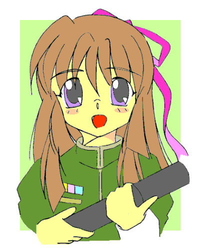

機動アイドル ミルキー・エンジェル 番外編
ぐらでゅえいしょん
よっすぃー作
じりっ…………
極度の緊張の続く中、ブリッジは重苦しい雰囲気に包まれていた。
「……アクティブセンサーを打ってみたらダメだろうか？」
沈黙に耐え切れず、ブリッジクルーのひとりが具申する。
「ダメダメ。そんなことしたら、相手にこっちの位置を教えてやるようなモンだよ」
その具申を一蹴の元に、パイロットシートに座る沖田優希が否定する。受身のパッシブセンサーに対して、自ら探信波を発するアクティブセンサーは、探査精度が高い代わりに逆探知される可能性の高い諸刃の剣なのだ。
「おいっ、それを言うのは俺の役目だぞ。……その通りなんだけど、ちょっとは遠慮しろよ」
拗ねたように如月が言う。作戦参謀役としては美味しいところを持っていかれて忸怩たるところがあるのだろう。
デブリが多数浮遊するこの宙域は、パッシブセンサーが用を無さず、守るにも攻めるにも格好の場所だが、一歩間違うと絶対的に不利な箇所と化す。特に膠着戦ともなれば、ある種我慢比べといっても良いだろう。
士官学校選抜の対校艦対戦。その決勝戦は索敵戦の様相を帯びてきた。
そして更に１５分が経過……
「しかしこのままタイムアウトに持っていかれたら、それもヤバイなぁ」
ブリッジに据え付けられたデジタルクロックを見ながら、艦長役の相沢が呟く。
「ヤバイなぁ……じゃなくて、その時は俺らの負けだぜ」
相沢の呟きに如月が訂正を入れる。
決勝戦までの獲得ポイント（有効攻撃数−被弾数）の関係から、時間切れ引き分けとなった場合、優希たちの乗る『うみかぜ』は、対戦相手の駆逐艦『プロミネンス』に判定負けとなるのであった。
「あと１５分か……敵さんこのままタイムアウトを狙っているかもしれないな？」
「うかつに動けない。けど、動かないと負けてしまう……ジレンマだな。なあ、沖田、バーナーを焚かずに移動する方法って、無いかな？」
「エアロックから圧搾空気を吹かせば、微速で移動はできるけど——」
如月の問いかけに、躊躇いながらも優希がそう答える。圧搾空気で移動すれば熱感知される危険は大幅に減るが、移動によるリスクまで消し去るものではない。
提案というには余りにも無謀な策であった。
「このままじゃ戦わずして負けになる。リスクはあるけどやってくれ」
「わかった」
如月の命を受けて、優希がエアロックのハッチを開放して、『うみかぜ』の移動を開始した。
しかし、相手も決勝戦まで勝ちあがってきた猛者……如月や相沢の思っていたような消極的な戦法ではなく、『うみかぜ』が動くその瞬間を虎視眈々と狙っていたのだ。
デブリに隠れていた『プロミネンス』は、絶対有利なポジションを取ったと知るや否や、果敢に加速を開始して『うみかぜ』の後方に陣取ったのである。
「本艦後方に敵艦！ 完全に張り付かれました！」
相手の大胆な行動に、レーダー担当のマイケルが叫ぶ。彼は膠着状態中もずっとレーダーに張り付いていたのだが、長時間強いた緊張の疲れから、注意力が散漫になっていたのだ。
『プロミネンス』はまんまとその隙をついた格好になったのである。
「クソッ！ 裏をかかれたか？」
宇宙艦艇にとって推進装置のある後方のポジションを取られるのは、致命的な戦術ミスである。作戦を策定した如月が歯ぎしりする。
「反省は後だ！ とにかくこの窮地を回避する！ ランダムに舵を取りロックオンを防ぐんだ！」
ショックから立ち直り我に帰った相沢が、艦長役として指示を飛ばした。
しかし『うみかぜ』と『プロミネンス』はともに同型艦同士。しかも一対一のドッグファイトとあっては、後方に取り付かれた時点でほぼ勝負は決している。ロックオンを防ぐ手だてはもはや無いだろう。
万事休すか！ ……誰もがそう思った。
「全員、踏ん張れよ……っ！！」
言うや否や、優希は操縦桿をぐっと押し下げた。効果的なバーニアの噴射により、鈍重な動きの『うみかぜ』がまるで戦闘機のような回避行動を見せる。艦首が起き上がったかと思うと、そのままの状態で一瞬のうちに沈み込むように降下したのだ。
「……なっ！」
その奇抜な回避方法に如月が驚いた。そんな操艦などマニュアルには書いていない。しかしそれ以上に驚いたのは『プロミネンス』のクルーだろう。絶対的優位なポジションについたはずなのに、敵艦がいきなり視界から消えたのだ。
動揺している様が艦の動きに現れている。
「ぼやっとしていないで攻撃命令だ！」
操縦桿を握りながら優希が促す。見れば自艦の艦首が敵艦の艦底を向いているではないか。絶体絶命のピンチから圧倒的優位なポジションに入れ替わっているのだ。
指揮官としてこの好機を見逃す手はない。
「攻撃に転ずる！ 艦首レーザー、照準合わせ」
「方位確認！ ロックオン自動追尾ヨシ！」
「エネルギーチャージ開始！ ……チャージ完了！」
砲術担当のきびきびした声が伝わる。
「発射準備完了！」
「主砲撃て！」
如月がそう叫ぶと同時に、艦首の砲塔からレーザーが放たれた。
４条の閃光は敵艦の艦底をえぐるようになぎ払う。
「ヒット。敵艦沈黙」
スピーカーから無機質な音声が出てくる。ブラスターと違い殺傷力のない指向性のあるレーザー光だが、貫いた先は敵艦のエンジンルームを直撃している。これが実戦なら轟沈は間違いないだろう。
判定は……？
『プロミネンス轟沈とみなし、この勝負うみかぜの勝ちとする』
「イャッホー！」
続く監督教官の通信に、ブリッジにいる全員が歓喜した。士官学校恒例の対抗艦戦に見事優勝したのだ。
『よーし、お前たち、優勝の祝いに、私の奢りでメシを食わしたる。楽しみにして降りてこいっ』
演習用のバトルフィールドから離脱途中、荻久保の祝電？
が届いた。この模擬戦の勝利は連邦宇宙軍の公式データとして記録され、その後の士官学校の格付けに多大な影響を与えるのだ。荻久保が興奮するのも無理はない。
「奢りったって、あいつの給料じゃ牛丼くらいなもんだぜ。期待はできないぞ」
「いや〜っ。オレたちの頑張りからすれば、けんちん汁くらいは付けてくれるんじゃないか？」
「プラスお新香だな」
そのやりとりで、皆がどっと笑う。
全ての緊張から解き放たれた緩やかな開放感は、極限の戦闘を繰り広げた者にしか得られない特権だろう。今、彼らにその資格が与えられたのだ。勝利者として。
キティーホーク型小型駆逐艦の特徴であるリフティングボディが、大気との摩擦で赤く染まり地上へと降下していく。
「最後の着陸だ。ここでミスるなよ」
クラスメイトのひとりが声をかける。
「牛丼が食えなくなるぞ」
「せっかくの奢りをふいにするなよ」
励ます動機がかなり不純だがそれは言わない約束だろう。
「任せておけって」
力強く優希が言い放つ。他の連中もそれぞれ自分の持ち場をこなしながらの軽口である。
「でもこの艦、いい加減ボロだからな」
「違いない」
軽い笑いの出る中、『うみかぜ』はランディングギアを出し、校舎裏の格納庫に無事着陸した。
「システムオールダウン。終わったよ」
優希が親指を立てて合図した。クラスメイトも同じく親指を立てて応える。
士官学校の全てのカリキュラムは終わった。後は卒業式を待つだけである……
教室に戻ると、かつてないくらいの上機嫌で荻久保が教壇に立った。
「みんなよく頑張ったな。優勝してくれて私も担任として鼻が高い！ なんといっても優勝だからな。数多ある士官学校の中でも最高の栄誉、艦対抗戦の優勝だ。選抜されただけでもすごいのに、その上優勝だからな。おまえたちは私の自慢の生徒となった。思えば私が士官学校の教官になって二十五年…………
〜（長いので中略）〜
…………そこでだ！ 頑張ったお前たちに、私から特別の褒美をくれてやる！」
興奮覚めやらぬ面持ちで、荻久保は一枚の色紙を取り出した。
「この色紙の主を知っているかっっ！」
高々と持ち上げて絶叫する。
またか……
声にこそ出さないが、生徒の多くは心の中で悪態をつく。
荻久保が手にした色紙には、連邦宇宙軍のアイドル「ミルキー・エンジェル」のリーダー、永井ミサキのサインが書かれていた。そのサインを“とある事情”で入手して以来、ことあるごとに持ち出してはつらつらと自慢をたれているのだ。
「全宇宙に彼女のサインは星の数ほど出回っているが、直筆で、なおかつ私の名前入りのサインはこの一枚のみだ！」
力強く言い放つ。
そりゃそうだろう。他人の名前入りのサイン色紙など欲しがる好事家はそうはいない。
……が、それを言ってはいけない。未成年とはいえ、ここの生徒はそれ位の思慮分別はある。
「羨ましがるな！ 欲しがるな！ 私は彼女と特別なパイプでつながっているのだ！」
自慢げに絶叫する。
特別なパイプねぇ……と、意味ありげに思いに耽る生徒がいたことを彼は気付いてない。
「その特別なパイプによって、な、なんと！ お前たちの卒業パーティーに『ミルキー・エンジェル』のメンバーが駆けつけてくれることになったんっっっっっ〜だ！」
「おおおおおおおおっっっっっっ！！！！」
途端に湧き上がる歓声とどよめき。荻久保の言ったセリフは、それ程までに信じられない事態だった。
「お前たちが驚くのも無理はない。たかだか一介の士官学校の卒業式に、多忙を極めるミルキー・エンジェルが来ることなど無いっ！ だがしかし、私は先の大戦前に直接彼女と話しをする機会に恵まれたのだ。その縁により今回のイベントが実現した。そのことを肝に銘じオレを尊敬するように！」
「イエッサー！」
クラス全員が荻久保に対して直立不動で最敬礼する。たかだかアイドルのイベントだけで、クラス全員が荻久保にあっさりとなびいてしまったのだ。
現金なヤツらである。
「スゴいなー」「ああ、他の学校じゃ絶対にありえないな」「子々孫々にまで自慢だぞ」ｅｔｃ ｅｔｃ——
いや、それは多分大げさだと思うが……
自身が誘致した一大イベントに、興奮する生徒を見て荻久保は、「うん、うん」と満足げに頷く。
ひとしきり頷き終えると、「あー、沖田、ちょっと話しがある」と、優希を教壇に呼びつけた。
「なんですか？」
キョトンと首を傾げる優希に、「実はな……」と前置きした後、荻久保はとんでもないことを話し始めた。
「……あちらさんの意向で、沖田だけはこのイベントの参加がご法度だそうだ」
「ええっ！？」
何故に？ 驚きの声しか出てこない。
優希の動揺を知ってか知らずか、荻久保は声をひそめ言葉を続ける。
「この間の大戦の際、お前さんがシルフィードに密航したのが問題だったんじゃないか？」
詳しい経緯はここでは述べないが、確かにそういう事件はあった。
「あ、あれは、先生が永井ミサキのサインが欲しいって——」
「確かにサインは欲しいと言ったが、私は『シルフィードに密航しろ』なんて言わなかったぞ」
「でもそれは成りゆきで……」
「成りゆきであろうが事実は事実だ。きけば船室に監禁されていたそうだが、本来は軍法会議モノの大事なんだぞ。この程度のお咎めで済んでよかったと思わないとな」
「そんな……」
詰め寄って言い寄ったが、荻久保は「これは決定事項だ」の一言で、うんともすんとも動かない。
「……じゃあ、当日ボクはどうなるんです？」
「卒業式はもちろん参加してもらうさ。しかし、その後のイベントの時間は別室で待機じゃないか？ 私も詳細まではいまいち判っていないのでな」
「そんな……」
「要件は以上だ。明日のイベントに備えて、身だしなみはしっかり整えておけよ！」
「「おおおっっ！」」
力強く時の声をあげると、荻久保を始めクラスメイトたちは意気揚々に引き上げていく。
教室にいるのは優希ひとりだけだった。
一方。
違った意味で不満を洩らす声も別のところであった。
「イベントをする？ しかも、士官学校で！」
肩までの ショートワンレングスの髪を掻き乱し、きつめの目を更に釣り上げながら、サブリーダーの今井涼子がミサキに詰め寄った。
「うん♪」
のほほんと答えるミサキ。
そう答えた途端。
「この忙しい時になに考えているのよ！」
バン！ 机を叩き、涼子が怒鳴った。
「今月のスケジュール表を見た？ 余裕ないくらいびっしり詰まっているのよ。どこをどうやって時間をひねり出すの？」
スケジュールをびっしり書き込んだ手帳を振りかざし、涼子は抗議する。
彼女が忙しいと言っているのは比喩でもなんでもない。ミルキー・エンジェルのメンバーたちは、本当に目が回るくらい忙しいのだ。
内外基地の慰問に各地へのイベント。軍属である以上、その合間を縫ってのデスクワークはもちろん存在するし、それに加えて先の大戦で廃艦になったシルフィードの代替艦の受領も控えており、「多忙」という言葉で片付けられない凄まじさなのだ。
ところが……
「スケジュールはちゃんと見ているわよ。ほら、ここが空いているでしょう？」
涼子の文句などどこ吹く風。怒涛のスケジュールの中でオアシスのようにぽんと開いた穴を指差し、ミサキは悪びれずに言い放ったのである。
「お・の・れ・と・い・う・や・つ・は〜〜〜〜〜〜〜〜〜っ！！」
すでにヒートアップして真っ赤になっている涼子の顔が、臨界を越えて更に真っ赤になる。それも無理はない。
「……この日をなんだと思っているの！？」
「オフ」
「そう、オフよ！ つまりお休み！ 休暇なの！ 殺人的なスケジュールの中で唯一生気を養える、そんな中での奇跡的なオフなのよ。それをアンタは独断で取ってきた、チンケなイベントでぶっ壊すつもりっ！？」
事と次第じゃただで済まないわよ！ 肩がわなわなと震え息が荒い。こみ上げる怒りが抑えられないのだ。それほど凄みのある詰め寄りようであった。
ところが当のミサキは、鈍いのかふてぶてしいのか全く動じていない。相変わらずのほほんとしながらお茶を啜っているのだ。
「ステージも小さいし、全員行く必要は無いわよ。わたしとあと２〜３人いればいいかな？ あくまでもメインは卒業式で、主役は卒業生だし。言ってみれば、わたしたちは添え物なんだから」
「だったらなおのこと私は行かないわよっ！」
卒業式の添え物なんかになりたくない。言葉にこそ出さないが、確固たる信念がそこにはあった。
「じゃあメンバーはわたしと花梨に恵……あと、ヴァネッサでいいかな？」
「勝手にして！」
「うん、勝手にやる」
意味深にミサキは微笑んだ。「イベントに行く卒業式…………優希クンの通っている士官学校なんだけどな」
「……えっ？ なに、それ？ 聞いてないわよっ！」
「言ってないもの」
「……しょうがないわね。副長としてここはアシストする必要があるし……お手伝いしましょ」
「言ったそばからそう言うか……」
そんなやりとりがあったことなどつゆ知らず、卒業式の準備は粛々と進んでいった。
とにもかくにも、卒業式の朝はやって来た。
「この服も今日で着納めか……」
とりあえず見た目だけは感慨深げに、如月が呟く。
「明日からはここに襟章が付くんだ。信じられないけどな」
相沢がブレザーの襟口を押さえながら言った。
ふたりの言う通り、士官候補生を示す濃緑のブレザーは今日の卒業式で着納め。明日の任官式には連邦宇宙軍の正装である白のブレザーで臨むことになる。
新任少尉として。
思えばいろんな事があったなぁ……ふたりの雑談をよそに、優希の脳裏に思い出が走馬灯のように蘇る。
入学式の時、もう少しで女子部の列に並ばされそうになった事。
基地見学で整備士官（もちろん男）にナンパされそうになった事。
夏はビキニの水着を着せられそうになり、パーカーを着たまま水泳の授業を受ける羽目になった事。
体育祭の打ち上げで告白されたこともあったっけ。……男に。
クリスマスが近づくとデートの誘い（くどいようだが男に）を頻繁に受け、必死で逃げ回ったこと。
バレンタインでーには「何故チョコをくれない！」と、あちらこちらから脅され、ホワイトデーは……思い出したくも無い。
「それもいい思い出かな？」
自分に言い聞かすように優希が小さく呟くと、突然背後から肩を叩かれた。
「なに？ グラデュエイションブルー？」
透き通るきれいな美声。
……が、その美声が優希のトラウマスイッチをオンにした。
極めつけのトラウマは半年前。
とあるきっかけでシルフィードに忍び込んだのが運の尽き。恥ずかしい格好で女装させられ、歌や踊りまで全世界ネットで流されたのだ。
幸い本名は伏せられていたので騒ぎは一過性だったが、街中に出る時ひどくビクビクしたものだった。
その根源を作ったのは……
「ほ、本物のミルキー・エンジェル！？」「嘘だろ！？」「……み、ミサキ姉ぇっ！！」
優希たちが振り返ると、ミサキとミルキー・エンジェルのメンバーが、白の正装姿でにこにこしながら並んで立っていた。
「ミサキ姉ぇがどうしてここに？」
「どうしてここにって。今日ここでイベントをやるって聞いてなかった？」
「それは聞いていたけど……」
どうして講堂や応接室じゃなくて、こんな校舎の裏側に出没しているのか知りたい。
そのことを尋ねると、開口一番ミサキは言い切った。
「そりゃあもう、優希クンに会うためじゃない♪」
言うや否やミサキは優希に抱きつき、スキンシップとばかりに頭を撫でる。
「うーん。背は伸びてないわね」
「半年やそこらでそうそう変わらないよ！」
ムキになって反論しようとする優希に、わざとらしく目を丸めミサキは言葉を続ける。
「そんなこと無いわよ、成長期でしょ？ わたしなんて優希クンと同じ頃は、１年で身長も５センチ伸びたし、バストだって——」
と、そこまで言いかけて、優希の後ろで驚きと羨望の混じったふたつの視線があることに気が付いた。
「えっと……あなたたちは？」
「き、如月士官候補生であります！」「同じく、相沢士官候補生であります！」
かちんこちんになりながら直立不動の最敬礼で、ふたりはミサキに挨拶する。
「な、永井大尉は沖田……失礼、沖田士官候補生とどのような関係なんですか？
」
「こいつは確か、シルフィードに密航した不届き者のはずですが？」
自分たちのことは棚に上げて、この異常なシチュエーションの説明を求める。
「ミサキ姉ぇって大尉！？」
「そうよ。昇進したんだから」
えへんとばかりに胸を張るミサキ。ふたりの敬礼には全く答えてない。
「だからこれからはミサキ女王様と呼びなさい」
「それ、あぶない表現だよ」
「そうかな？」
「そうだよ」
「じゃあ、ミサキお姉様」
「それも何か違う」
気が付いたら漫才を繰り広げているふたりに、「あの〜、質問の答えは？」と、遠慮がちに相沢が尋ねる。元からそうだったのだが、改めて完全に無視されていたのだ。
「……ああ、そうだったわね」
指摘されて初めて気が付き、ミサキは改めてことの馴れ初めを話し始める。「全くの偶然なんだけど、わたしと優希クンは子供の頃家がお隣さん同士だったのよ」
「ええっ！」「本当ですか？」
「もちろん本当よ」
驚くふたりにはっきりと肯定する。
「沖田、おまえ！ そんなネタをどうして黙っていたんだ！？」
「おいしいところは独り占めか？ 友達甲斐の無い奴だなっ！」
手荒いいパンチを浴びせながらふたりが愚痴る。かなり私怨が混じっているみたいだが、それはまぁ仕方がないだろう。
「そ、そんなこと言われても、会うまで気が付かなかったんだからしょうがないだろう！」
「そうよね。優希クンは冷たかったもんね。わたしのことを完全に忘れていたし」
「こいつはそういう奴なんです」
「友達甲斐も無かったし」
「サインだって貰ってくれなかったし」
「下着だって盗んでくれなかったし」
「わたしのお願いも聞いてくれないし」
「全部優希が悪い！」「全部優希が悪い！」「全部優希クンが悪い！」
「……って、ハモるなーっ！！」
いつの間に意気投合したんだ？ 調子を合わせる三人に、優希が怒鳴る。
「ちょっとミサキ、遊ぶのは良いけど、そろそろやることやらないと時間がなくなっちゃうわよ」
調子に乗ってふざけているミサキに、時計を気にしながら涼子が言った。口調はたしなめているが、実際のところはプチ嫉妬が混じっているようだった。
「えーっ！？ もう、そんな時間？」
「ヒトサンマルマル（13：00）には式の開始よ。私たちもそうだけど、彼らも準備時間が必要よ」
「そうね。優希クンは謹慎だけど、彼らは出席しないといけないもんね」
「そういうこと」
名残惜しそうだが、優希から一旦手を離し、相沢と如月に握手をしてミサキたちは体裁を整えた。
「ま、そんな訳だから今日は楽しんでね」
「は、はいっ！」「ありがとうございます！」
生握手の上にミサキから直々に言われ、ふたりはスキップでもするような軽やかな足取りで、意気揚々と講堂に駆けて行った。
後に残ったのは、言うまでも無く優希とミサキのふたりだけ。
……………………………………………………………………………………………………………………………………………………。
「……さて邪魔者もいなくなったことだし。優希クン……ゆ〜っくり、お話が出来るわね」
口調は穏やかだが、その瞳の表情は「悪の女幹部」そのもの。優希は思わず２歩３歩と後ずさった。
「え、ええっと……ボクは確かライブの観劇禁止でしたよね？」
「その通り。観・る・の・は・禁・止・よ♪」
意味深にミサキが言う。「でもね……参加はＯＫよ」
「遠慮します！」
即答したがミサキの行動のほうが早かった。言うや否や優希の腕を掴み、ぐいっとばかりに横付けしていた大型バスに押し込んだのであった。
「優希クン、いらっしゃい。久しぶりよね」
「メグミさん！」
「あら、覚えてくれていたの♪ 光栄ね」
車中にはミルキー・エンジェルの広報担当、メグミ・マードック大尉が乗り込んでいた。
シルフィード乗艦中もなにかとおもちゃにされていただけに、優希はこの女史がなにかと苦手だったりする。
「メ、メグミさんも、その、ライブのスタッフで？」
「もちろんよ。それと着付けは専門のスタッフがいたほうが良いでしょう？」
「そ、そうですね」
「いつもいつも控え室が利用できるとは限らないし、こういう専用車があったほうが何かと便利なのよ」
メグミの解説通り、車内はバスというよりちょっとした楽屋といった佇まいであった。奥にはゆったりとしたソファーの並ぶリビングルームのような小部屋があり、その手前にはメイクルームさながらのドレッサーに試着室のような小部屋が３つ。並んでいるハンガーには衣装がたくさん吊るしてあるのは言うまでもない。
「そ……それにしても、豪華なバスですね……」
「そうかな？ これくらいは最低必要でしょ」
実際地方のイベントでは重宝しているらしく、ごく自然にメグミが答える。が、優希にとっては馴染めない場所だ。豪華だなんだという問題ではなく、その雰囲気に圧倒されてしまうのだ。
「な、なんだか落ち着かなくて……」
思わず本音が漏れる。
「ダメね。そんなことじゃ」
次に出てくるセリフは敢えて言わず、メグミはホットココアを勧める。
熱さをものとせず一気に飲み干すと、優希は若干落ち着きを取り戻したようだった。
「どう？ 落ち着いた？」
優しく微笑みメグミが尋ねる。
「はい、おかげさまで」
ココアのポリフェノールが効いたのか？ 若干心にゆとりの出た優希が正直に答える。
「それは良かったわ。準備もできたことだし……さあ、着替えましょう♪」
メグミの瞳がギン！ と光ると、優希の肩をがっしと掴み、そのまま更衣用の小部屋に押し込んだ。
「これに着替えて出てくるのよ」
そう言われて差し出されたのは、今の制服と同じデザインのブレザー。但し、丈は短くボタンの位置は逆、ボトムはプリーツスカート……と、完全に女子生徒用だった。
「これを……着るんですか？」
それは勘弁して欲しい。一縷の望みを託して優希が尋ねる。
「ゴメーン。それちょっとまって！」
ほっ……と、思ったのも束の間。
「それ着る前に、先にこれを付けてちょうだい」
そう言って渡されたのは、ブラ入りのオールインワンランジェリーだった。
「こ、これも着るんですか？」
「あ、パッドも忘れずに付けてね♪」
メグミの追い討ちはまだ続いていた。
「相変わらず化粧ののりが良いわね。若さってのは何物にも勝る武器ね」
一連の着替えの後、ドレッサー前に「拘束」された優希に対してメグミが言う。右手にパフを持ち、しっかり化粧を施しながらである。
「あ、ありがとうございます」
ひきつりながら優希が礼を述べる。いつも思うのだが、何故にメグミはこうも熱心に、優希の化粧や着付けをやりたがるのだろうか？ 恐ろしくて訊けない質問のひとつであった。
「さて、これでいいわね」
いつものように？ ウイッグを被ると、女顔の男子学生「沖田優希」はどこかに消え、凶悪な美貌を誇る美少女「優希」が誕生するのであった。
「ホント、元が良いから磨き甲斐があるわ」
「……いや、褒められてもそんなに嬉しくない」
「もう。照れ屋さんなんだから♪」
違うと思うけど、そこを突っ込むのは止めておこう。
「とにかくこれで卒業式に出席できるわね。立派に勤めを果たしてらっしゃい」
「こ、この格好で出るんですか？」
それでは全校中に例の女装がばれてしまうではないか？ 優希は激しく嫌がった。
「大丈夫。名前はちゃんと伏せておくから」
「そんなの直ぐにバレ……」
「ないわよ。鏡を見て御覧なさい。全く別人だから」
言われておそるおそる鏡を見ると、「これがボク？」と言いたくなるような美少女が不安げな顔で立っていた。艶やかな黒髪は天使のワッカを作り（カツラだけど）、ウエストは細く（補正下着のお陰だけど）脚はあくまでも細く長い（これは元から）。清楚さの中にも弾ける若さが見え隠れして、はっきりいって普段の優希と全く別人である。
「た、確かに違うかも……」
「美少女が美女に変わっていく真っ最中って感じかしら？ これだけ見事に変身したら絶対に分からないわよ。だから安心しなさい」
安心して良いのやら悪いのやら。いいように言いくるめられたような気もするが、メグミに引っぱられ優希はステージ奥に連れて行かれた。
先ほどまでの騒動で印象は薄くなっているが、今日のメインイベントは卒業式である。
士官学校とはいえ学校は学校。卒業式でやることは基本的に同じである。
静まり返った講堂の中で卒業生を呼ぶ担任教官の声と、それに返事する生徒の声だけが厳かに響いていて、粛々とした雰囲気の中で卒業証書が次々と授与されていく。
ひとりひとり名前が呼ばれ、壇上に上がり校長から卒業証書を受け取っていく。およそ１時間ぐらい経っただろうか？ ひとりの生徒を除いて卒業証書の授与は終了した。（それが誰かは敢えて言うまい）
校長の堅苦しい訓示が再度始まり、ひと心地ついたところで、「ここで諸君らの門出を祝ってスペシャルなゲストが駆け付けています」と、ミルキー・エンジェルを紹介した。
ざわっ。
さっきまでの厳かなムードから一転、校長の言葉通りに華やかな雰囲気に包まれて壇上にミルキー・エンジェルのメンバーが現れた。一部のクラスを除いてこの事実は知らされておらず、会場は一気にどよめいた。
現れたメンバーは５人だけだが、リーダーの永井ミサキにサブリーダーの今井涼子の２トップがいるという豪華な布陣。士官学校への表敬訪問というレベルでは考えられない豪華さであった。
しかもいつものステージを意識したような衣装とは異なり、白の正装姿である。こういうきりりとした姿は滅多に見られるものではなく、生徒たちの驚きもひとしおだった。
左右をざっと見回しながらヴァネッサがすっと右手を上げた。するとさっきまでのざわめきが嘘のように収まり、講堂は再び静寂を取り戻した。
その状態を確認した上で涼子が一歩前に出て、校長からマイクを受け取り、凛とした声で祝辞を述べ始めた。
「出席している皆さん、卒業おめでとうございます。明日の任官式を経て、あなたたちは正式に連邦宇宙軍の士官となります。前戦に行く人、後方を守る人、整備や補給に司る人など、その進路は様々でしょう……」
その一部始終を舞台袖で見ている人物がいた。いわずと知れた優希とメグミである。
「あれ？ ちょっとヘンだよね？」
いつもと違う雰囲気を察し、優希がメグミに振り返る。
「ん、どこが？」
「いつもならミサキ姉ぇが積極的に喋るのに、今日は後に控えて涼子さんがＭＣしているし」
確かに普段のイベントではまずありえないシチュエーションである。
「ああ、その事。実はミサキって、あれで結構あがり症でね。普段はＭＣで色々喋って緊張を誤魔化しているのよ」
「あがり症？ ミサキ姉ぇが？」
信じられないといった面持ちでメグミに訊き返す。テレビなどで見る言動やシルフィード艦内の振る舞いを見ても、そんな印象は微塵も感じられないのだから。
その余りにも素直な問いかけに、メグミはため息をついて、諭すように優希に説明を始めた。
「優希クンはもうちょっと人を見る目を養った方が良いわね。ミサキは確かに何でもそつなくこなすけど、決して器用なタイプの人間じゃないのよ。むしろその逆。だから支えてあげる人がいないとダメなの」
「それが涼子さんやメグミさんなんですね」
壇上でのサポートを見ながら優希が呟く。
「違うわよ……というか、昔なら正解かもしれないけど、今は違うわよ」
「えっ、違うの？」
どちらかというと天然ボケ系のミサキに対して、凛とした雰囲気を漂わせる涼子に秘書然としたメグミは、格好のサポート役に映っている。
「この多忙なスケジュールを縫って、どうしてミサキがここに来たかを理解すれば判るわよ」
意味がわからずきょとんとする優希。
「さあ、今日のメインイベントよ！ 卒業証書を貰ってらっしゃい」
そう言うと、メグミは優希の背中をどん押して、彼（彼女？）を壇上に送り込んだ。
多々良を踏むようにして壇上に躍り出た優希は、自分に注がれる無数の視線に圧倒された。
「えっ？ あっ？ な……っ？」
ただでさえ恥ずかしい女装姿を晒している上に、無数の好奇の目に晒されて優希の鼓動は一挙に跳ね上がり、指先まで真っ赤に染まる。
「あっ、そっ、うっ……」
思いっきり上ずってしまい、半ば我を忘れていた。
会場にしてみれば、これだけの美少女がなんの前触れもなく登場したのだ。ざわつくなというのは無理な話だが、ざわつかれる当事者になるとその行為は緊張に拍車がかかるだけである。
緊張がピークに達しようとした刹那。背後から柔らかい何かが巻きついてきた。
「落ち着きなさい。壇上にいるみんなはあなたの晴れ姿を見に来たのよ。だから、ちゃんと卒業証書を受け取って」
ほのかな甘い甘い薫りと背中に触れた柔らかなぬくもりを残し、ミサキは一旦優希から離れて涼子からマイクを受け取った。
「さて。気づいている人もいるかもしれないけど、彼女はわたしたちミルキー・エンジェルを……いえ、地球の危機をを救ったヒロインと言っても過言ではないでしょう。ですが、彼女はまだ学生の身分で、恩賞を受けることは出来ませんでした。規則とは言え、それではわたしたちの気持ちが納得できません。そこでこの場を借りて、わたしたちなりの感謝の気持ちを表したいと思います。
……卒業証書を受け取って貰えるかしら？」
視線こそ講堂に向かって喋っていたが、ミサキの想いは真っ直ぐに優希に届いていた。
「はい！」
会心の笑顔で答える。
「可愛いなー」「彼女にしたい」「レベル高すぎるって」「羨ましい」「……」
会場から羨望や嫉妬、その他もろもろの小さな声が出ていたが、壇上の優希には全く届かない。ミサキの心遣いに全て跳ね返されているのだ。
「卒業おめでとう。優希クン」
マイクのスイッチを切り、ミサキが直接語りかける。
「ありがとうございます」
卒業証書を受け取り、優希がミサキに向かって最敬礼をした。
「でも、今日この女装は勘弁して欲しかったです」
我が身を見て小さく不満を述べる。卒業証書を貰えるのは嬉しいが、出来れば「男」として貰いたかった。
「ダメダメ。今日はこの格好の優希クンでないと意味がないの。シルフィードの英雄に卒業証書を渡したかったんだから」
そんな優希の愚痴に指を振りながらミサキが反論した。彼女にすればこの艶姿を見たいがために、タイトなスケジュールを縫ってやってきたのだから。
「とほほ……」
最後までおもちゃ扱いされ、優希は肩を落とす。
「ま、長い人生色々あるわよ」
「頑張りなさい」
何をだ？ という言葉は野暮だが、絶妙なタイミングで涼子たち他のメンバーが慰めにかかる。確かに優希の人生はこれからであろう。
学生という時代は卒業したが、それは単なる節目にしか過ぎないのだから。
「さあ、卒業式も大団円。最後にもう一発頑張るわよ！」
しんみりとした雰囲気から一転、涼子が威勢の良い声を上げた。
「みんなー！ 準備はいいかなー？」
「おーっっっ！！」
ミサキのかけ声に呼応するように、講堂が揺れる。
「んじゃ、いくわよー！ ３・２・１……ＧＯ！！」
合図と共にミサキが帽子を高々と飛ばした。
「ＧＯ！！！！」
ミサキの帽子が舞い上がるのを受けて、講堂にいる卒業生全ての帽子が宙に舞った。まるで天に届けとばかりに。
「おーっ！」
優希もまたステージ上から帽子を高々と飛ばした。彼も心は狭い講堂の天井を抜け、澄んだ青空を超えて無限に広がる宇宙へと飛んでいた。
「いらっしゃい！ わたしたちの許へ！」
満面の笑顔でミサキがそう言うと、壁面のスピーカーから小気味良いサウンドが流れてきた。
ミルキー・エンジェルのヒットナンバー、『SＴＡＮＤ UＰ EVERYBODY！』である。
「……これが私たちからの、卒業祝いのプレゼントよ！」
涼子が叫ぶと講堂のボルテージが一挙にヒートアップした。
一緒になって唄う。一緒になって踊る。その歌声はどんな勇壮な行進曲よりも、彼らを宇宙に駆り立てていくだろう。
「一緒に行こう！ 宇宙へ！」
宇宙はどこまでも輝いているはずだ。

おしまい
□ 感想はこちらに □